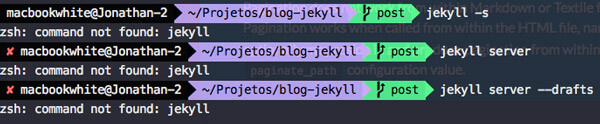
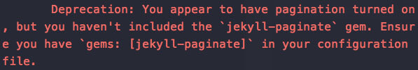

E aew pessoal blz? Postzinho rápido pra deixar aqui como resolvi esse problema, e espero que possa ajudar alguém, já que não achei esse material em pt-br.
A Gênese do problema
Tudo começou quando resolvi mudar meu terminal, saindo do padrão que vem no mac e indo para o Iterm2. Demorei um pouco para resolver uns problemas de configuração, mas tá tudo rodando perfeito. Até que eu resolvi escrever um novo post sobre as ferramentas (hardware/ sofware) que trabalho hoje e ao rodar o Jekyll no terminal apareceu isto:

hehe, pode ver que digitei três vezes de forma diferente, pois havia pensado que tinha errado o comando pra chamar o server. Até que percebi que ele não estava reconhecendo o comando Jekyll. :o
Blz, novo terminal, vamos reinstalar o Jekyll sem problemas. Instalei e quando fui rodar novamente apareceu isto:

Deprecation: You appear to have pagination turned on, but you haven't included the `jekyll-paginate` gem. Ensure you have `gems: [jekyll-paginate]` in your configuration file.
E isto no localhost:
Fiz o que todo mundo deveria fazer quando encontra um problema que você não sabe como resolver, consultei o guru da montanha que tem todas as respostas
Bem, vou mostrar como resolvi:
1 - Primeiramente dei o comando no terminal:
sudo gem install jekyll-paginate
2 - Fui no arquivo de configuração _config.yml e coloquei a seguinte linha lá:
gems: [jekyll-paginate]
E voilá. Tudo voltou a funcionar.
O que aconteceu?
Basicamente isto:
Para o Jekyll 3, tinha de incluir o plugin jekyll-paginate no meu gemfile e no meu _config.yml. Pra quem usava o Jekyll 2 (que era meu caso antes do Iterm), isto já era um padrão.
Referências
Fica aqui uma listinha dos links que visitei como referência:
- https://github.com/poole/lanyon/issues/159
- https://github.com/jekyll/jekyll/issues/3393
- http://jekyllrb.com/docs/pagination/#enable-pagination
- https://teamtreehouse.com/community/jekyllpaginate-gem
Até a próxima!